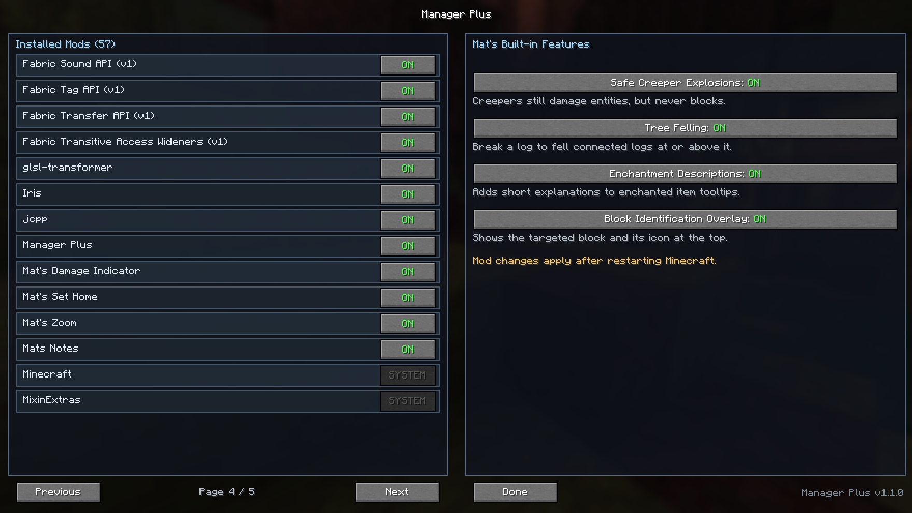

Fabric Mod for Minecraft
Mat's Mod Manager
Want an easier way to manage your Minecraft mods?
With Mat's Mod Manager, you can quickly configure
supported Mat's Mods and built-in quality-of-life
features from one simple menu.
Choose exactly which features you want to use and
customize your Minecraft experience your way.
Lightweight, organized and easy to use.
How to use:
Press Mod Manger in the top right corner. Toggle on or off the things you want.
Gallery
